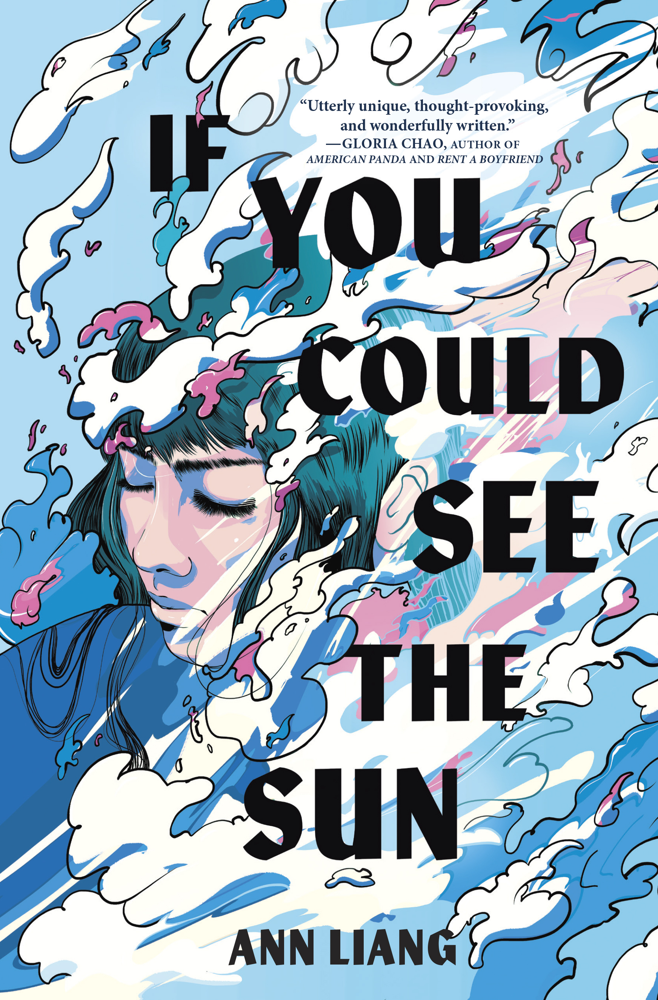
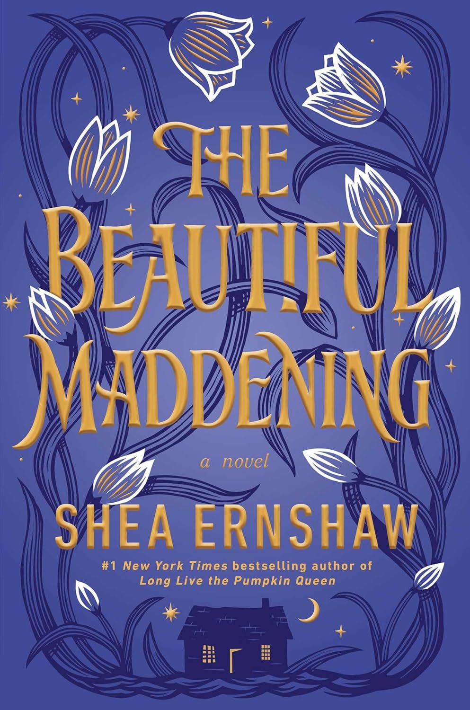
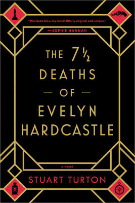

Assignment 4.2: Build a Web Page Exercise - Part 4
If You Could See the Sun

(author: Ann Liang)
The Seven Deaths of Evelyn Hardcastle

(author: Stuart Turton)
The Beautiful Maddening

(author: Shea Ernshaw)